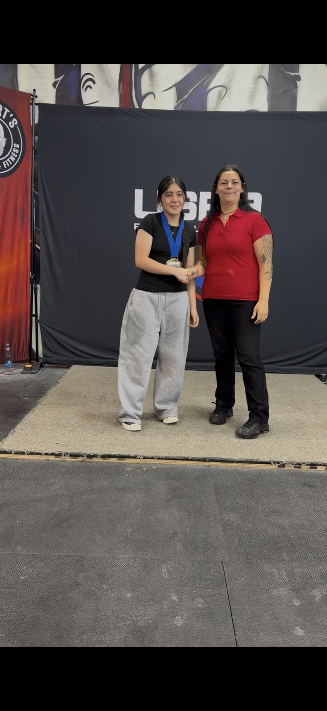

Best successful attempt
Junior powerlifter · New York
Strength built with discipline.
Meet Fatima tu Zahra, a student-athlete beginning her competitive powerlifting journey with focus, courage, and a commitment to steady progress.

1stDivision place
267.5 kgMeet total
125 kgBest deadlift
298.111DOTS score
Athlete profile
A promising first chapter
Fatima competes in raw powerlifting while balancing school and personal development. Her first documented USPA result reflects her willingness to train consistently, perform under pressure, and learn from every attempt.
This profile is maintained by her family to preserve an accurate record of verified results and milestones as her athletic career develops.
Verified competition record
USPA Tested 315 Legacy Bloodline
August 23, 2026 · Syracuse, New York · Women Raw Powerlifting · Junior 60 kg, ages 13–15
Best successful attempt
Best successful attempt
Official result: First place in her listed division, with a 267.5 kg total at 59.5 kg body weight.
Competition media
A milestone moment
Video and photography from Fatima’s USPA competition appearance.
Looking ahead
Training for the next level
01
Continue developing safe, technically sound lifts with qualified coaching.
02
Build a consistent record of sanctioned competitions and verified results.
03
Pursue higher-level opportunities while maintaining strong academic performance.